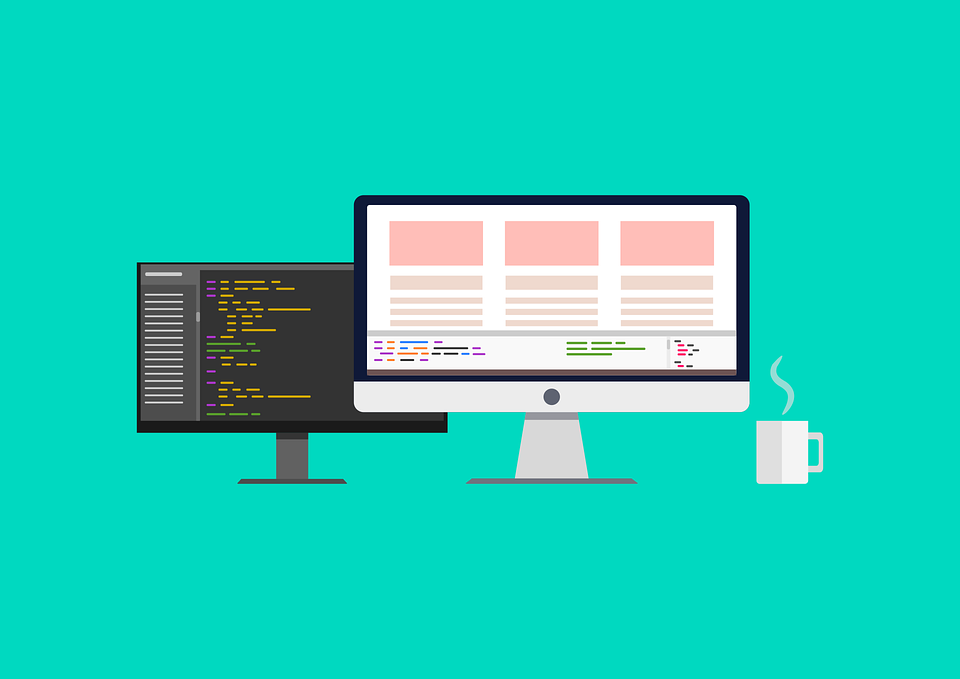

JavaScript (/ˈdʒɑːvəskrɪpt/), often abbreviated as JS, is a programming language that is one of the core technologies of the World Wide Web, alongside HTML and CSS. As of 2022, 98% of websites use JavaScript on the client side for webpage behavior, often incorporating third-party libraries. All major web browsers have a dedicated JavaScript engine to execute the code on users' devices.
JavaScript is a high-level, often just-in-time compiled language that conforms to the ECMAScript standard.[10] It has dynamic typing, prototype-based object-orientation, and first-class functions. It is multi-paradigm, supporting event-driven, functional, and imperative programming styles. It has application programming interfaces (APIs) for working with text, dates, regular expressions, standard data structures, and the Document Object Model (DOM).

코로나로 팀원들과 만나기 힘들었을 텐데 팀 프로젝트는 어떻게 진행되셨나요?
팀이 짜이고 팀원들과 카페에서 대면했을 때, 마크업이나 CSS, JS 등 얘기하면서 많이 친해졌지만 이후 5인 집합 금지 때문에 각자 코딩하게 되었습니다. 그렇지만 힘들 때마다 게더타운에서 조별 회의장에 들어가 보면 카메라로 모두 같은 고민과 표정으로 고통받는 모습을 볼 수 있어 ‘나만 힘든 게 아니구나’를 느낄 수 있어 힘이 되었습니다.(웃음)
또, 팀원들끼리 어려운 부분(API는 어떻게 불러와요?)을 서로 궁금한 것들을 풀어주기도 했습니다. 저는 CSS를 잘 모르는데,
마침 팀에 웹 퍼블리셔가 있어서 화면 공유로 팀원에게 도움을 받기도 했습니다.